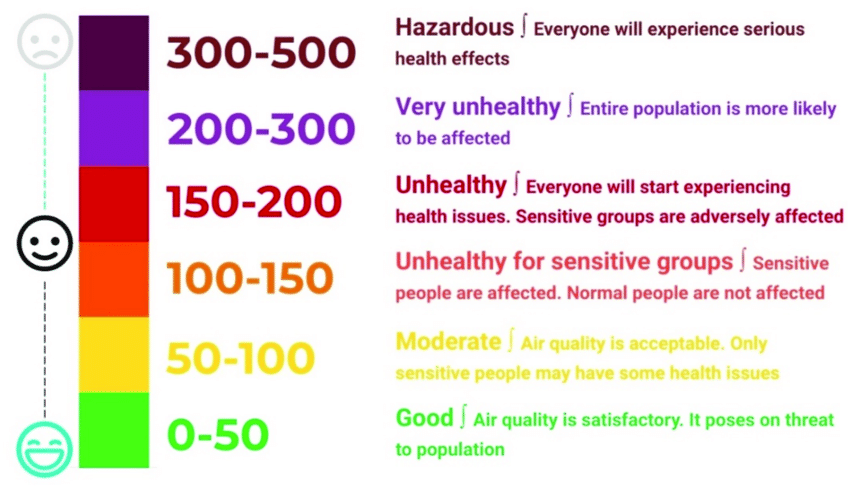

The Air Quality Index is the measurement of air quality which is impacted by air pollution, generally caused by smoke. The parameters by which the air quality is measured are PM2.5,
PM10, Sulfur Dioxide (SO2), Nitrogen Dioxide (NO2), Carbon Dioxide (CO2), Carbon Monoxide (CO), and Ozone (O3).

What is Particulate Matter (PM)?
PM2.5 stands for Particulate Matter which has a diameter of less than or equal to 2.5 micrometer (10-6th of a meter) and PM10 is inhalable particles with generally 10 micrometers or less. (A hair from the human head is 60-80 micrometers, depending on an individual’s thickness. This means that a human hair is about 30 times bigger than PM2.5 and 6 times bigger than PM10.) The sources the PM derives from varies quite a bit. PM2.5 often comes from combustion of diesel fuel, gasoline, oil, or wood produce. These also make up a small portion of PM10 which also includes dust from landfills, construction sites, etc.
What effects does PM have on our health and the world around us?
Exposure to Particulate Matter for a short-term duration can result in premature mortality, heart and lung damage, asthma attacks, emergency room visits, and restricted movement for days. These affects primarily target young children, and seniors with pre existing conditions. Research also shows that children under the age of 18 years old living in communities infested with high levels of PM had slower lung growth, and thus, they had smaller lungs at the age of 18 when compared to children habitating places with low PM levels.
What is Ozone (O3)?
Ozone emits from fossil fuels, such as fossil fuels, combustion, consumer products, evaporation of paints, etc. Surprisingly enough, Ozone is good for us when it is at a certain altitude, but very harmful when at ground level. Atmospheric ozone blocks UV rays and prevents risk of skin cancer. When ozone is at this altitude, sunlight in the warm weather is very pleasant, and so much sunscreen is unnecessary.
What effects does Ozone have on our health and the world around us?
Despite the merits of atmospheric ozone, ground level ozone is just as harmful as any other harmful particles in the air, if not more. Ground level ozone can worsen bronchitis (which is the condition that prevails when the bronchial tubes, the airways in the lungs, often blocked with mucus), emphysema (which is the condition which introduces shortness of breath into one’s life, often by damaging and causing the walls of the many small air sacs (alveoli) to rupture, creating a few large air sacks instead of many small ones), and asthma. It is also possible to reduce lung function and cause the lining of the lungs to inflame. Alongside all of this, a variety of issues such as chest pains, throat irritation, congestion, and coughing may be triggered by Ozone.
What is Nitrogen Dioxide (NO2)?
Nitrogen dioxide is a gas that contributes greatly to the smoggy air seen in much of California. The gas emits from fossil fuels such as coal, gas, and oil. A lot of it comes from a car’s fuel.
What effects does Nitrogen Dioxide have on our health and the world around us?
NO2 might be one of the most deadliest and most common chemical which pollutes our air. It doesn’t take too much of it for it to be able to hinder our blood’s ability to carry sufficient amounts of oxygen to the parts of our body. This cause headaches, dizziness, fatigue, and can even cause a blue color to the skin and lips (methemoglobinemia) when present in high amounts, like there is in many parts of the U.S. When levels are too high, this can lead to trouble breathing, collapsing, and death. When human life is exposed repeatedly to high levels, permanent lung damage is inevitable.
The Study
I have downloaded data for the air quality in Orange County, analyzed it on an Excel sheet, and created a graph based on the analyzed data.
My objective was to:
-find out what factors impact the air quality and, thus, our health
-find out what the relation between natural calamities and the air quality is
-find out what we can do to keep our air healthy and our bodies happy
The Box and Whisker Plot for September
After analyzing the data downloaded from U.S. EPA AirData, I used Excel to create a box and whisker plot. Box and whisker plots are used to display the distribution of data points. The line through the "box" of the graph is the median (the value which is found in the middle of an ordered dataset), and the top and bottom of the "whiskers" are called the lower limit and upper limit of the trend. Any values outside of this range are called outliers. and do not follow this trend.
For example if the first, second (median), and third quartile are x,y, and z respectively, the upper and lower whiskers are calculated by z+1.5*IQR and z-1.5IQR respectively. The IQR (Inter Quartile Range) is calculated by executing z-x.